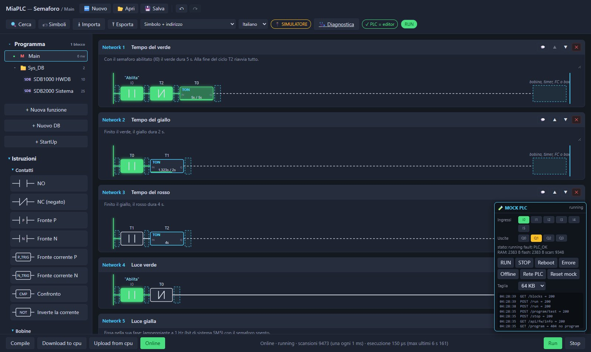

Provami: l'editor vero, un PLC simulato.
Qui provi MiaPLC senza scheda e senza installare niente. Si apre l'editor vero, lo stesso che sta dentro la scheda. Al posto della scheda c'è un PLC simulato nel tuo browser.
Disegni un network, cioè un pezzo di programma in ladder. Lo mandi al PLC simulato, lo metti in RUN e lo guardi lavorare.
Si apre in una nuova scheda. Gli esempi pronti sono sotto 📂 Apri. Meglio da computer: l'editor è fatto per schermo e mouse.
Per chi vuole i dettagli: il PLC simulato usa la stessa macchina virtuale del firmware. Un programma che funziona qui funziona anche sulla scheda.
Il tuo primo programma in 2 minuti
Facciamo la cosa più semplice: un pulsante accende una lampada. Il pulsante è l'ingresso I0, la lampada è l'uscita Q0.
- Un contattoDalla colonna Istruzioni trascina un contatto NO (normalmente aperto) nel Network 1 e scrivi
I0. - Una bobinaTrascina una bobina a destra e scrivi
Q0. - ScaricaDownload to cpu, conferma, poi Run.
- GuardaOnline, poi clic su
I0nel riquadro MOCK PLC, il PLC finto in basso a destra:Q0si accende.

Ingressi e uscite
Clic su I0…I5 per accendere e spegnere gli ingressi. Le uscite Q0…Q3 si colorano quando sono attive.
Come la scheda
RUN, STOP, Reboot, errore e scheda offline si simulano dal riquadro, per vedere come reagisce l'editor.
Resta salvato
Il programma resta nel tuo browser anche se ricarichi la pagina. Reset mock riparte da zero.
Il simulatore stima i tempi di esecuzione: quelli veri si misurano sulla scheda. Tutto gira nel tuo browser, nessun dato viene inviato.